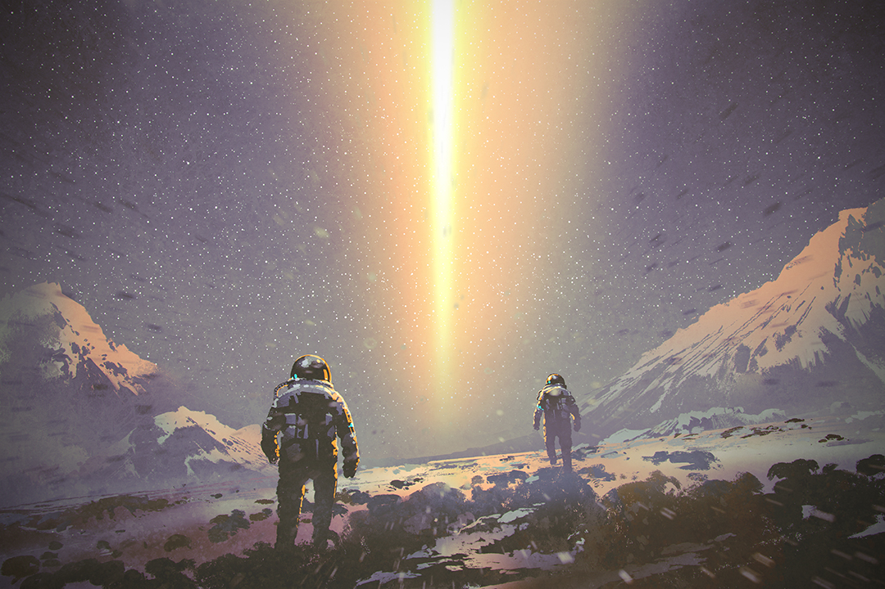

Moja przygoda z RPGami zaczęła się w gimnazjum, gdy pierwszy raz z kolegami z klasy graliśmy w
Earthdawna i Warhammera. Wtedy zachwycił mnie świat i przygody, które wspólnie przeżywaliśmy. I tak
przeszedłem przez życie grając w RPGi zarówno za sprawą kości i kawałków papieru (gry fabularne), jak i
komputera.
Aż przyszedł do mnie pomysł czy samemu nie spróbować swoich sił w stworzeniu własnego świata w klimacie
sci-fi.
W ten sposób narodziła się w mojej głowie idea tworzenia systemu i świata nazwanego Gwiezdnym Pyłem.
Moja misja
Wszystkie gry w jakie grałem, opowieści jakie przeczytałem i wspólne sesje jakie
spędziłem wśród przyjaciół w czasie licznych sesji gier fabularnych, wpłynęły na moją decyzję o podjęciu
się próby stworzenia jednej z najchętniej granych polskich gier fabularny w klimacie science fiction.
Jako twórca chcę zafascynować graczy światem przedstawionym w systemie "Gwiezdny pył", aby w czasie
odkrywania świata, byli
w pełni zaangażowani i zdziwieni możliwościami stoją przed ich bohaterem. A jak mówi słynne powiedzenie
"kto
nie ryzykuje, ten nie pije szampana".
Adra czeka!
Andra, galaktyka w której się znajdziesz, to zupełnie inny świat od tego, który
znasz na co dzień. Akcja rozgrywa się w dalekiej przyszłości. Setki lat od tego co Tobie znane. Ludzie
chcą
ratować własny gatunek przed niechybną śmiercią, byli zmuszeni uciec z rodzimego układu słonecznego
ścigani
przez śmiertelny rozbłysk gamma. Historia zaprowadziła ich do starożytnej bramy, które przeniosła ich w
sam
środek nowej galaktyki. Andry!
Kontinuum możliwością jest ogromne, a Ty stoisz przed wyborem, czy chcesz to wszystko odkryć, czy
pozostać
w obecnej
ziemskiej rzeczywistości.
Starnetowe feedy prosto z Andry
Giagi w Andrze – Gwiezdny podcast #2
9 lipca 2018
Rasy
Witam, W dzisiejszym podcascie usłyszysz, więcej na temat kolejnej rasie. Tytuł wiele Ci powie o jakiej
konkretnie.
Eksperymentuje trochę z formą nagrań, więc kolejny filmik może być jeszcze w innej konwencji. Zobaczę,
która
będzie
najlepsza i dla widzów i dla mnie samego. Co do samej rasy mam pewien problem. Trudno...
Aktualizacja #2 – Grywalne rasy, statek kosmiczny i broń dystansowa
29 czerwca 2018
Broń dystansowa, Rasy, Statek kosmiczny
Przez ostatnie dni mogłeś zobaczyć kilka nowych tekstów na stronie. Zarysowałem koncepcje, by pobudzić
Twoją
wyobraźnie.
Szczegóły i smaczki zobaczysz w finalnej wersji gry. Niestety dużo publikując na stronie zaniedbuje prace
na
zapleczu.
Z tego powodu będę aktywny tylko co jakiś czas. Poznasz po postach :) Drobne podsumowanie modyfikacji czeka
na…
Ludzie w Andrze – Gwiezdny podcast #1
4 marca 2018
Wydarzenia

Witam, Długo nic nie opublikowałem. To nie oznacza, że nic nie robiłem! Wręcz odwrotnie. Dokonało się
sporo
zmian
na stronie. Jedne zmiany będzie niedługo widać na stronie, drugie natomiast są widoczne tylko dla mnie.
Ostatnio
najwięcej pracuje nad tak dużym pojęciem jakim są statki kosmiczne. Mechanika walki, projekty broni czy…